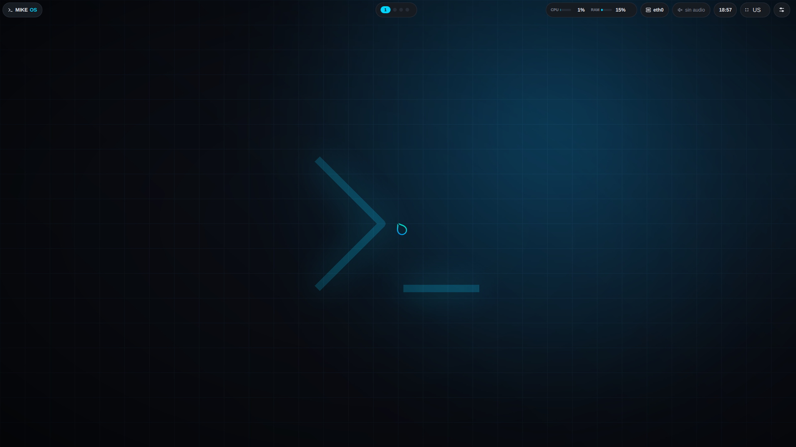

Kernel Linux propio, init con runit, gestor de paquetes propio y escritorio propio. Cero systemd.

El kernel se compila con CONFIG_EFI_STUB, así que es él mismo un
ejecutable UEFI: se copia en la partición EFI como
EFI/BOOT/BOOTX64.EFI y la firmware lo arranca directamente. No hay
GRUB que mantener ni que se pueda romper.
Compilado para este sistema. Soporte de hardware real, arranque UEFI y la configuración afinada para portátil.
Gestor de paquetes propio: verificación SHA256, resolución de dependencias e instantáneas de btrfs antes de instalar.
Barra y Centro de Control escritos para MIKE OS. Se configura todo sin tocar un archivo.
Shell propia en C, con tuberías, redirecciones y variables.
Las actualizaciones se piden, no se empujan. El repositorio ya viene configurado, así que basta con:
# cuando quieras la última versión
mpm update && mpm upgrade
El kernel también viaja por ahí, y al instalarse conserva el anterior para poder volver si no arranca. Cómo funciona →